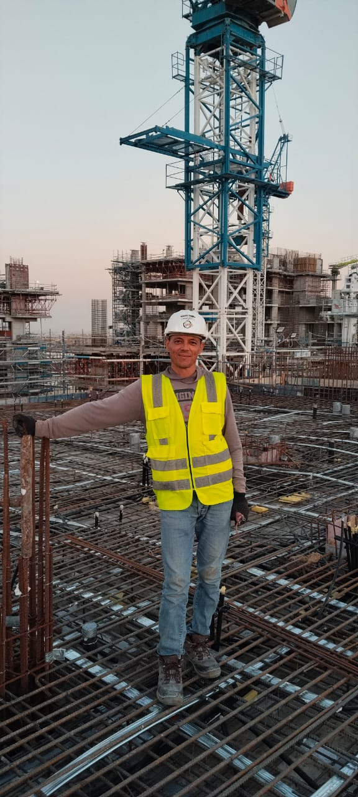
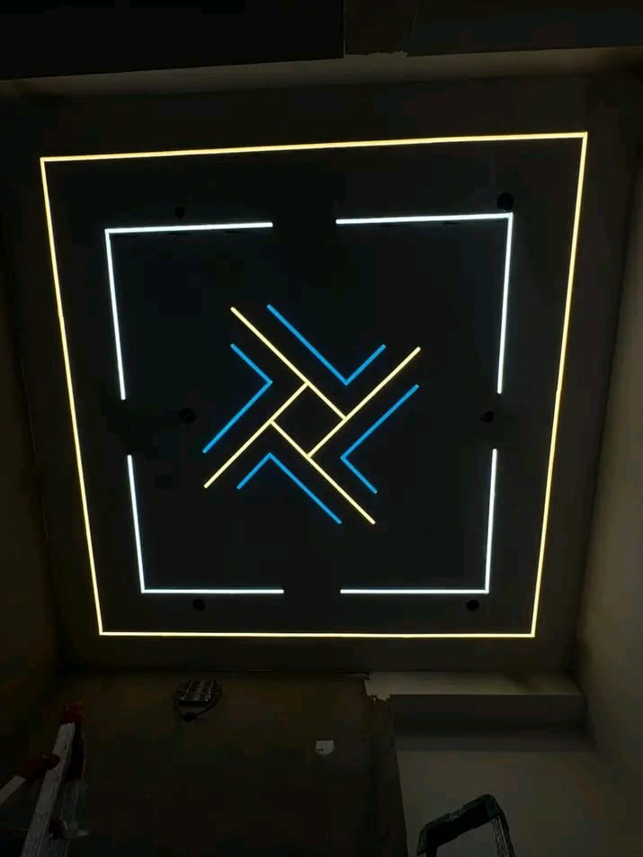
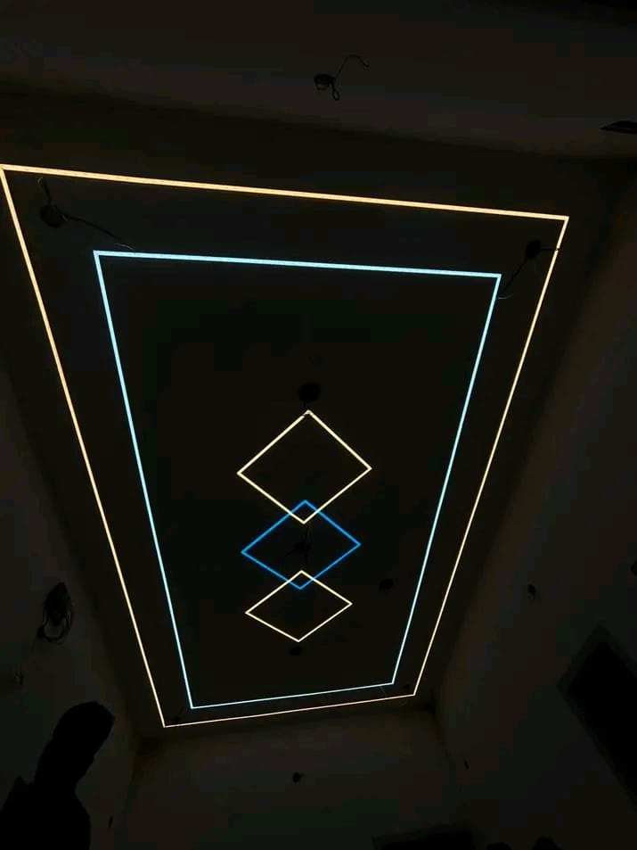

⌁
تأسيس الكهرباء
تنفيذ أعمال تأسيس وتمديدات الكهرباء للمباني.
أحمد حسين عبد الله سيد — مهندس كهرباء من موط، الوادي الجديد. أعمل في تأسيس الكهرباء والتشطيب وتنفيذ أعمال الكهرباء الحديثة.
موط، الوادي الجديد

مهندس كهرباء من موط بمحافظة الوادي الجديد. تشمل أعمالي تأسيس الكهرباء، وأعمال التشطيب، وتنفيذ أعمال الكهرباء الحديثة.
الكهرباء والتشطيب
تنفيذ أعمال تأسيس وتمديدات الكهرباء للمباني.
تنفيذ أعمال التشطيب الكهربائي بعناية وتنظيم.
تنفيذ أعمال كهربائية حديثة وفق احتياج المشروع.
نماذج من أعمال الإنارة

تصميم سقفي بخطوط LED هندسية تجمع بين الإضاءة البيضاء والزرقاء والدافئة.

خطوط إضاءة محيطية مع وحدات داخلية بأشكال هندسية وألوان متناسقة.
مساحة لإضافة الشهادات مستقبلًا
اسم الشهادة · الجهة المانحة · تاريخ الحصول · رابط الشهادة
يسعدني التواصل ومناقشة فرص التعاون.